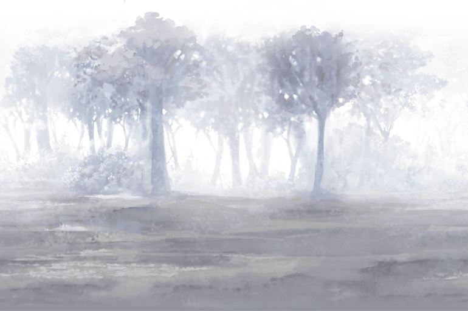

Now that I’ve gone through the different types of units and the numerous types of stages that
you’re going to have to clear using said units, let’s talk about my own experiences and some of
my favorite moments while playing the game. First of all, I would like to say that I’ve been
playing the game for around 4 years now. During that time, I’ve experienced a lot of funny,
infuriating, satisfying, and saddening moments while playing. There were times when I lost
because of an error in my timing, and there were times wherein I was able to win due to pure
luck. In short, playing Battle Cats will never become boring for me due to how much of a
rollercoaster of emotions it is every time I play.
My favorite moment out of my hours of playing would probably be when I defeated EoC
Chapter 3 Moon which marked the end of the EoC part of the story and rewarded me with
Bahamut Cat, an extremely powerful unit that you get for free. It was a moment wherein I was
far too happy and was celebrating since I’ve finally finished the first part of the game’s story
and was now capable of facing on more difficult levels due to having Bahamut Cat. He helped
me a lot in clearing the Stories of Legend stages which aren’t part of the story but are tough
stages that give tons of awards.
